Роль АЕС під час воєнного стану в Україні
Спеціальний інтерактивний випуск журналу «Екологічний вісник» про стійкість української атомної генерації, стратегічну роль Південноукраїнського енергокомплексу (ПАЕС), незалежний моніторинг радіаційного фону АСКРО та інженерний захист енергооб’єктів.
Науково-учнівський журнал • №7/2026
ЕКОЛОГІЧНИЙ ВІСНИК
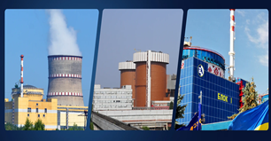
- 01 Функціонування атомної енергетики України під час війни
- 02 Роль ПАЕС, ГЕС і ГАЕС у забезпеченні стійкості Півдня
- 03 Практичний аналіз даних АСКРО та SaveEcoBot
- 04 Інтерв’ю з начальником зміни черги ЕБ №2 ПАЕС
- 05 Трирівневий захист, AP1000 та довідник читача
Читайте у нашому номері:
Про що піде мова у журналі
Актуальність, мета, завдання та вуличне опитування жителів Південноукраїнська.
АЕС України у воєнний час
Пошкодження мереж і стабілізуюча роль зв’язки ПАЕС + Ташлицька ГАЕС.
Екологія та технічні ризики
Вплив обстрілів, захист Південного Бугу, охорона праці та АСКРО.
Аналіз радіаційного фону
Інтерактивний розбір даних SaveEcoBot та ЕкоЗагроза у 30-км зоні.
Надійність та майбутнє
Трирівневий захист об’єктів, перехід на Westinghouse, блоки AP1000.
Інтерв’ю зі спеціалістом ПАЕС
Розмова з начальником зміни черги ЕБ №2 Пікусом А.О.
Довідник (відповіді читачам)
Найчастіші запитання населення та інтерактивна перевірка знань.
Післямова та Література
Шість головних висновків дослідження та перевірені джерела.
Про що піде мова у нашому журналі «Екологічний вісник»?
«Сьогодні атомна генерація зберегла життя українців. Це факт. Завдяки досвіду, накопиченому в атомній енергетиці, Україна змогла вистояти в найскладніші моменти».
Діалог з громадою міста-супутника ПАЕС
Працюючи над номером, ми пройшлися вулицями Південноукраїнська та провели живе опитування містян. Найбільше людей хвилюють питання реальної небезпеки АЕС під час повітряних атак, стабільності електропостачання та екологічного стану довкілля.
Об’єкт дослідження: атомна енергетика України як базовий елемент об'єднаної енергосистеми в умовах воєнного стану (з фокусом на ПАЕС).
Мета та 4 завдання нашого проєкту:
- Проаналізувати стан атомної енергетики України та наслідки пошкоджень інфраструктури в умовах війни.
- Оцінити стабілізуючу роль Південноукраїнського енергокомплексу (у зв'язці з ГЕС і ГАЕС) для Південного регіону.
- Провести власну практичну роботу — аналіз динаміки радіаційного фону за даними системи АСКРО.
- Визначити шляхи підвищення надійності (трирівневий захист, нові блоки, комбінація з ВДЕ) та дати фахові відповіді мешканцям міста.
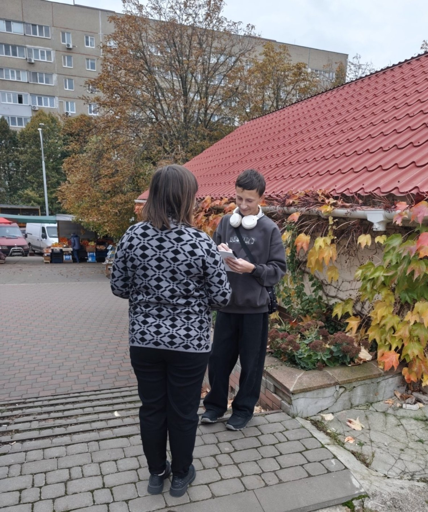
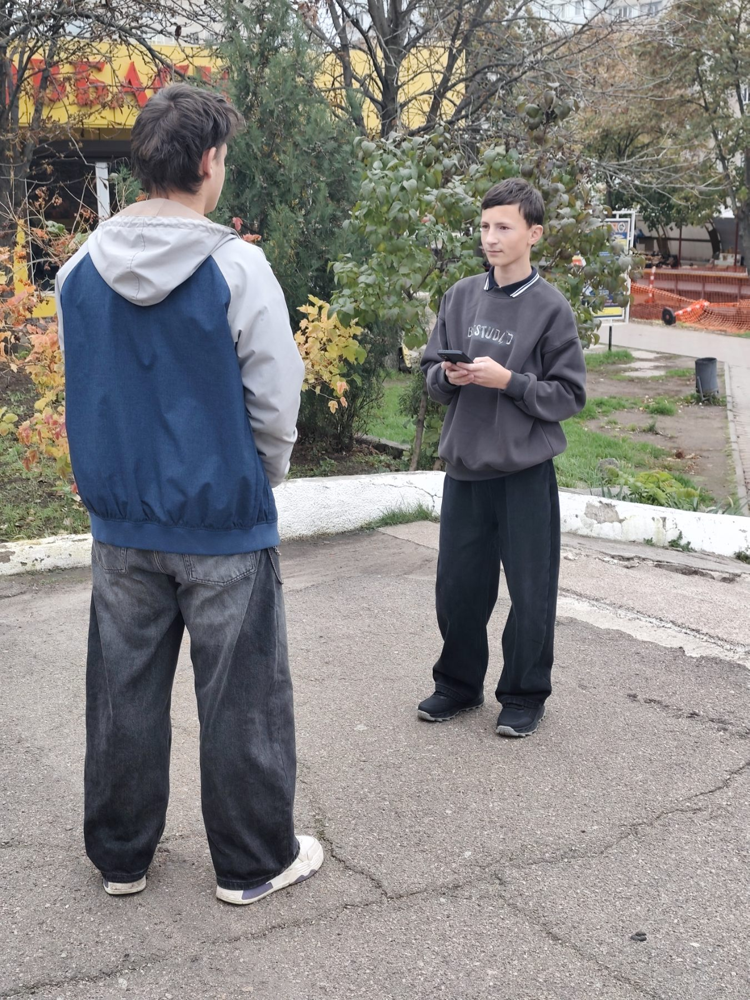
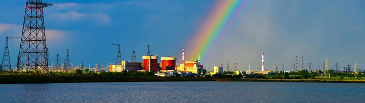
Атомна енергетика України в умовах воєнного стану
У 2026 році в Україні офіційно налічується 4 атомні електростанції загальною встановленою потужністю близько 13,8 ГВт (13 835 МВт). Під повним контролем держави перебувають три з них — Рівненська, Хмельницька та Південноукраїнська (9 енергоблоків сумарно ~7,8–8 ГВт).
Запорізька АЕС — найбільша в Європі — з 2022 року перебуває під окупацією в режимі «холодного зупину» і не генерує струм для української мережі. Чорнобильська АЕС має статус державного спеціалізованого підприємства на етапі зняття з експлуатації (підтримка об’єкта «Укриття» та поводження з РАВ).
Незважаючи на втрату контролю над ЗАЕС, за підсумками першого півріччя 2026 року підконтрольні Україні АЕС виробили 26,82 млрд кВт·год — на 163 млн кВт·год більше, ніж за аналогічний період минулого року. Завдяки оптимізованій ремонтній кампанії вдається мінімізувати одночасне виведення блоків і тримати баланс системи.
Після масованих ракетно-дронових ударів по ТЕС, ТЕЦ та ДніпроГЕС, агресор цілить у відкриті розподільчі пристрої (ВРП-330, ВРП-750) та високовольтні лінії. Коли лінії руйнуються, станція не може видати потужність, і спрацьовує аварійний захист. Пошкодження турбін, генераторів і трансформаторів створює критичний дефіцит.
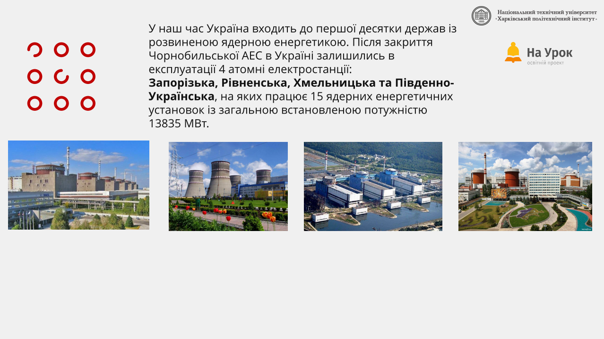
Таблиця 1.1. Атомні електростанції України
Роль Південноукраїнського енергокомплексу у стійкості Півдня
Будівництво розпочато у 1976 році як унікального комплексу, де атомна (ПАЕС), гідроелектростанція (Олександрівська ГЕС) та гідроакумулююча станція (Ташлицька ГАЕС) працюють як єдиний злагоджений організм. Клікайте на точки 1–9 на карті, щоб дослідити кожен вузол.
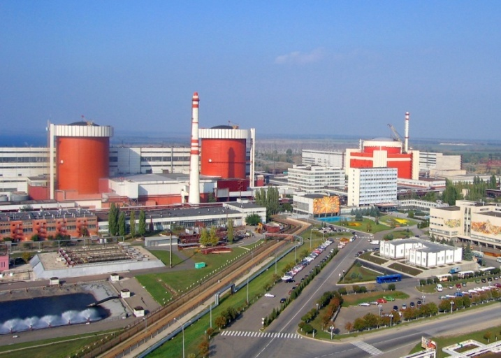
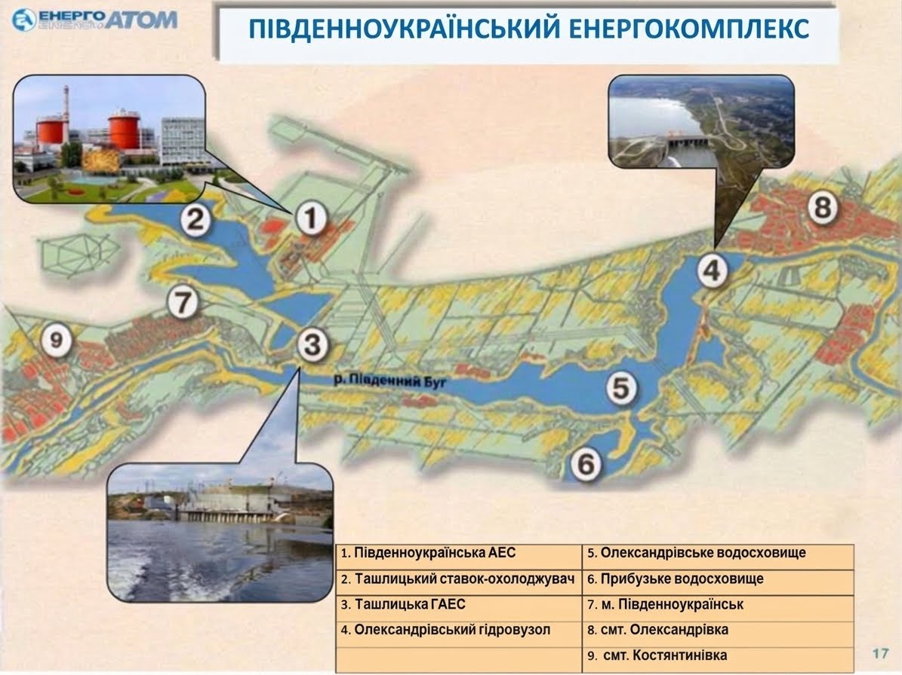
1. Південноукраїнська АЕС (ПАЕС)
Три енергоблоки ВВЕР-1000 по 1000 МВт (введені у 1982, 1985, 1989 рр.). Основа базової генерації Півдня України. Реактори ВВЕР-1000 не можуть швидко змінювати потужність під час піків, тому їх підстраховують ГЕС і ГАЕС.
Екологічні та технічні аспекти експлуатації АЕС під час війни
Реактори ВВЕР-440 та ВВЕР-1000 проєктувалися за мирних часів без урахування прямих бойових дій. ПАЕС неодноразово фігурувала у звітах через прольоти російських крилатих ракет і дронів «Шахед» на висоті менше ніж 100–200 метрів над реакторами.
2.1 Таблиця 2.1. Технічні виклики експлуатації АЕС та методи протидії
| Технічний виклик | Опис та наслідки | Шляхи протидії / Захист |
|---|---|---|
| Удари по видачі потужності | Атаки на відкриті розподільчі пристрої (ВРП) та магістральні підстанції. Блокують передачу електроенергії в мережу. | Посилення ППО навколо критичних вузлів, зведення першого та другого рівнів інженерного захисту підстанцій. |
| Загроза знеструмлення (Blackout) | Втрата зовнішнього живлення систем охолодження реакторів і басейнів витримки через пошкодження ЛЕП. | Автоматичний перехід на резервні дизель-генератори, забезпечення станцій запасом палива на тривалий термін. |
| Криза охолодження (кейс ЗАЕС) | Руйнування Каховської ГЕС створило загрозу для гідрологічного режиму ставка-охолоджувача окупованої Запорізької АЕС. | Переведення всіх 6 блоків ЗАЕС у режим «холодного зупину» та буріння додаткових підземних свердловин. |
| Прольоти ракет та БПЛА | Понад 100 ворожих дронів та ракет щомісяця фіксуються в небезпечній близькості до ядерних об’єктів (ризик уламків для бризкальних басейнів). | Цілодобовий моніторинг траєкторій, постійна передача даних міжнародним верифікаторам місій МАГАТЕ. |
2.2 Екологічні аспекти та захист водної екосистеми
Радіаційний фон і контроль
На підконтрольних Україні АЕС радіаційний стан стабільно перебуває в нормі завдяки автоматизованим постам АСКРО. На окупованій ЗАЕС через дії військових РФ періодично виникає ризик втрати зв’язку з постами спостереження.
Поводження з ВЯП та РАВ
Логістика транспортування відпрацьованого ядерного палива (ВЯП) та радіоактивних відходів (РАВ) суттєво ускладнена обстрілами шляхів сполучення, що змушує організовувати безпечне накопичення на майданчиках АЕС.
Басейн Південного Бугу
Для енергокомплексу ПАЕС критичним є захист річки Південний Буг, Ташлицького та Олександрівського водосховищ: ведеться постійний контроль температури скидної води та хімічного складу, щоб не допустити теплового забруднення й цвітіння вод.
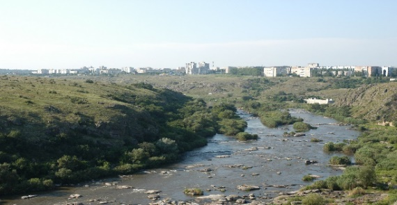
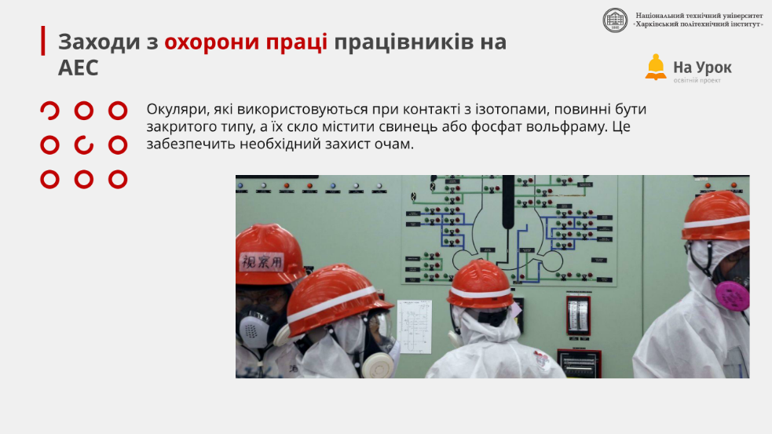
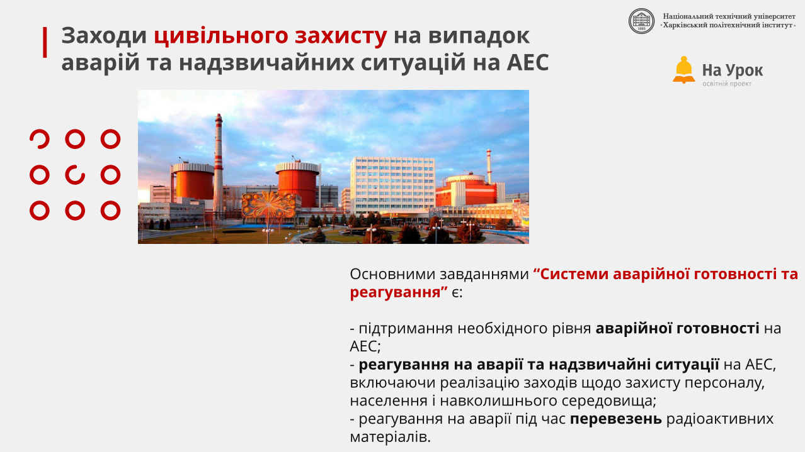
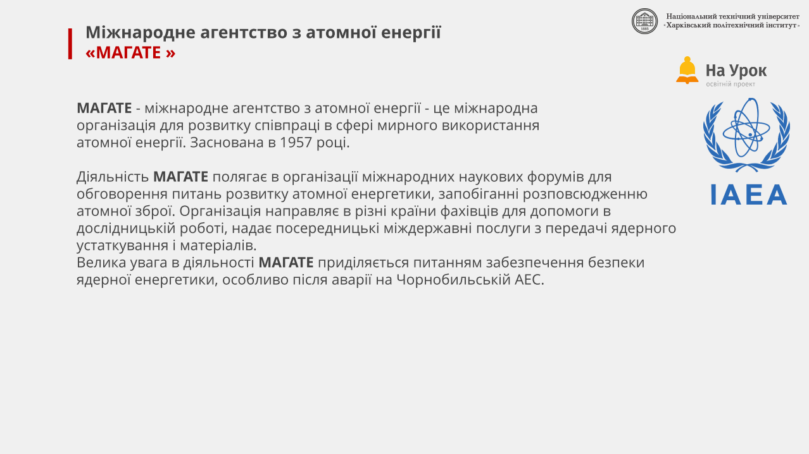
Аналіз радіаційного фону м. Південноукраїнська та 30-км зони (дані АСКРО)
У межах проєкту проведено власний мікроаналіз потужності експозиційної дози (ПЕД) гамма-випромінювання за даними платформ SaveEcoBot та «ЕкоЗагроза» у різні періоди 2026 року.
Порівняння фактичного фону з нормою НРБУ-97
Наведіть або натисніть на стовпчик графіка, щоб побачити деталі періоду.
Пости моніторингу Миколаївщини
SaveEcoBotОберіть населений пункт для порівняння з санітарним лімітом 0.30 мкЗв/год:
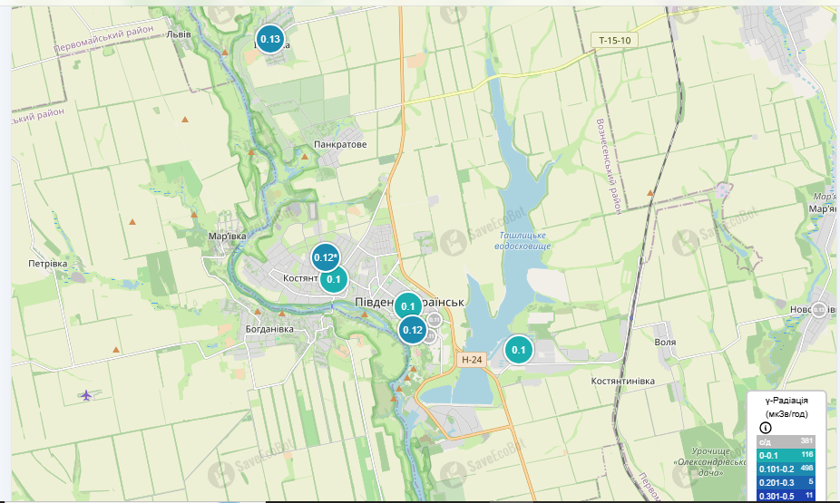
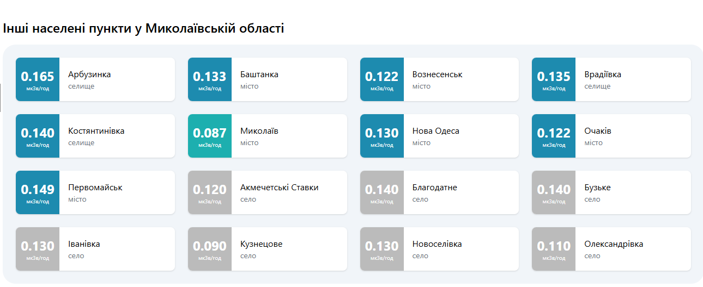
Шляхи підвищення надійності та майбутнє атомної енергетики
На українських АЕС впроваджується Комплексна зведена програма підвищення безпеки (КЗПБ), спрямована на захист від повного знеструмлення, посилення фізичної стійкості та стратегічну модернізацію енергоблоків.
3.1 Заходи протидії загрозам та забезпечення ядерної безпеки
Безпосередньо навколо атомних станцій розгорнуто зони протиповітряної та протидронової оборони для перехоплення ворожих ракет і БПЛА.
Міжнародні експерти постійно працюють на всіх АЕС України, фіксуючи будь-які аномалії та загрози через обстріли суміжної мережі.
Автоматика переводить блоки на власні потреби, або вмикаються резервні дизель-генератори, що підтримують надійне охолодження палива.
«Енергоатом» на 100% перейшов на ядерне паливо американської компанії Westinghouse, ліквідувавши залежність від РФ.
Трирівневий підхід до інженерного захисту енергооб’єктів
Оскільки самі гермооболонки реакторів здатні витримати навіть падіння легкого літака, найбільш уразливими цілями є відкриті розподільчі пристрої (ВРП) та силові трансформатори. Оберіть рівень захисту для детального перегляду:
Захист від уламків та вибухової хвилі (Габіони та блоки)
Трансформатори обносять масивними спорудами із залізобетонних блоків та габіонів, заповнених піском або гранітним відсівом. Такий бар’єр повністю нівелює дію уламків ракет і дронів у разі близького вибуху, ефективно гасить ударну хвилю.
3.3 Плани розвитку: блоки AP1000 та SMR
Ключовий вектор майбутнього — відхід від радянських стандартів та перехід на передову американську технологію АР1000 компанії Westinghouse:
- Добудова 3-го і 4-го енергоблоків на Хмельницькій АЕС.
- Інженерно-вишукувальні роботи для будівництва блоків №4 та №5 на Південноукраїнській АЕС.
- Опрацювання розміщення малих модульних реакторів (SMR) на існуючих майданчиках.
- Стратегічна державна мета — досягнення 25 ГВт атомної генерації до 2050 року.
«Зелений» перехід: формула АЕС + ВДЕ + ГАЕС
Атомна енергетика стала головним чинником безвуглецевого переходу України, забезпечуючи понад половину всієї чистої генерації та мінімізуючи викиди CO₂ навіть під час війни.
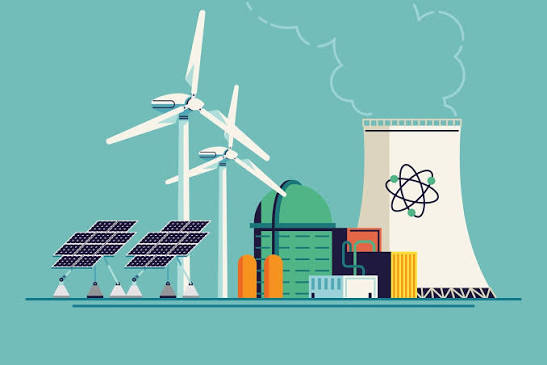
Відверто про безпеку: інтерв’ю зі спеціалістом ПАЕС
Щоб дати об’єктивні відповіді на хвилюючі запитання жителів міста-супутника, редакція журналу поспілкувалася безпосередньо з фахівцем Південноукраїнської АЕС.
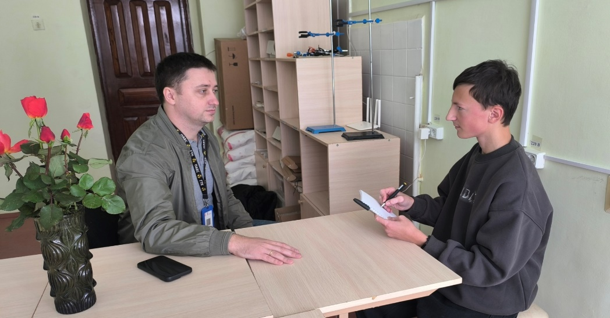
- Постійний контроль температурного режиму скидної води;
- Контроль водного балансу (рівні в Ташлицькому водосховищі, витрата води у р. Південний Буг, випаровування, продувка);
- Регулярний хімічний та екологічний відбір проб;
- Систематичний гідрологічний та метеорологічний контроль.
Довідник «Найчастіші запитання про АЕС України»
Короткі та зрозумілі відповіді читачам журналу «Екологічний вісник» на найгостріші побутові й технічні питання воєнного часу.
Міні-вікторина від «Екологічного вісника»
Головні висновки дослідницької роботи
Населення має бути поінформованим про реальний стан надійності і захисту енергосистеми. Проаналізувавши теорію, дані АСКРО та думку фахівця, ми дійшли шести висновків:
Список використаних джерел інформації
- [1] Державна служба України з надзвичайних ситуацій (ДСНС)
- [2] Вісник НАН України: Огляд стану потужностей і безпеки АЕС у 2026 р.
- [3] SaveEcoBot: Карта радіаційного моніторингу Південноукраїнська
- [4] Офіційні дані щодо радіаційного фону в Південноукраїнській громаді
- [5] Стан радіаційного фону в громаді (жовтневі виміри)
- [6] НАЕК «Енергоатом»: Охорона навколишнього природного середовища
- [7] Офіційний портал Міністерства енергетики України